Ñuñoa · ferretería
Para la casa antigua
161 reseñas en Bustamante. Lo que la casa de los sesenta necesita y la tienda grande ya no tiene.
- 161reseñas en Google
- 8:30abre de lunes a viernes
- 2001registraron ferrolusac.cl
- 0páginas vivas: ese dominio hoy dice «cuenta suspendida»
¿Todavía se consigue esto?
Para la casa antigua
Seis cajones con lo que ya no viene en la tienda grande. Abre el tuyo.
Manillas y bisagras
De medidas que ya no vienen. Trae la vieja.
Llaves de paso y flexibles
Para cañería antigua, con su hilo. Lo del gas y lo eléctrico, siempre con profesional.
Cordel y contrapeso de guillotina
Para que la ventana vuelva a subir sola.
Portalámparas de rosca antigua
Y la ampolleta que le calza. Trae el portalámparas viejo.
Masilla de vidriero
Para el vidrio suelto en el marco de madera. Con su espátula.
Pintura para estuco
La que respira con el muro. Trae una lasca del color viejo.
Trae la pieza vieja. Si no está, se encarga.
LlamarTodavía se consigue. Hay que saber dónde.
Qué hay
Las familias
-
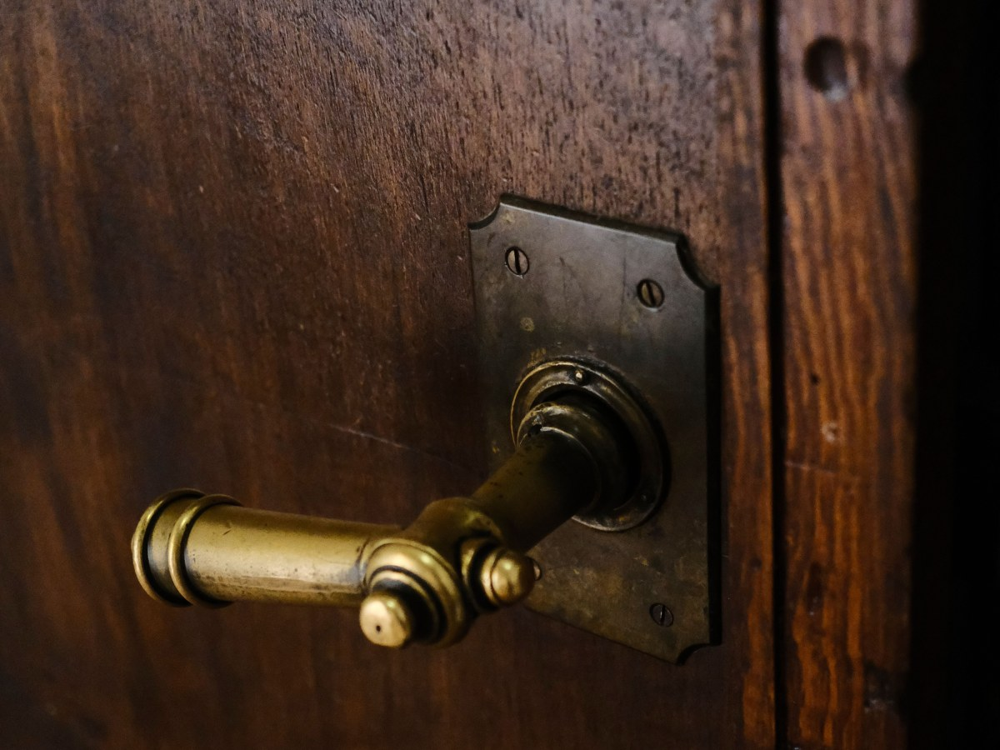
01
Cerrajería y herrajes
Manillas, bisagras, cerraduras.
-
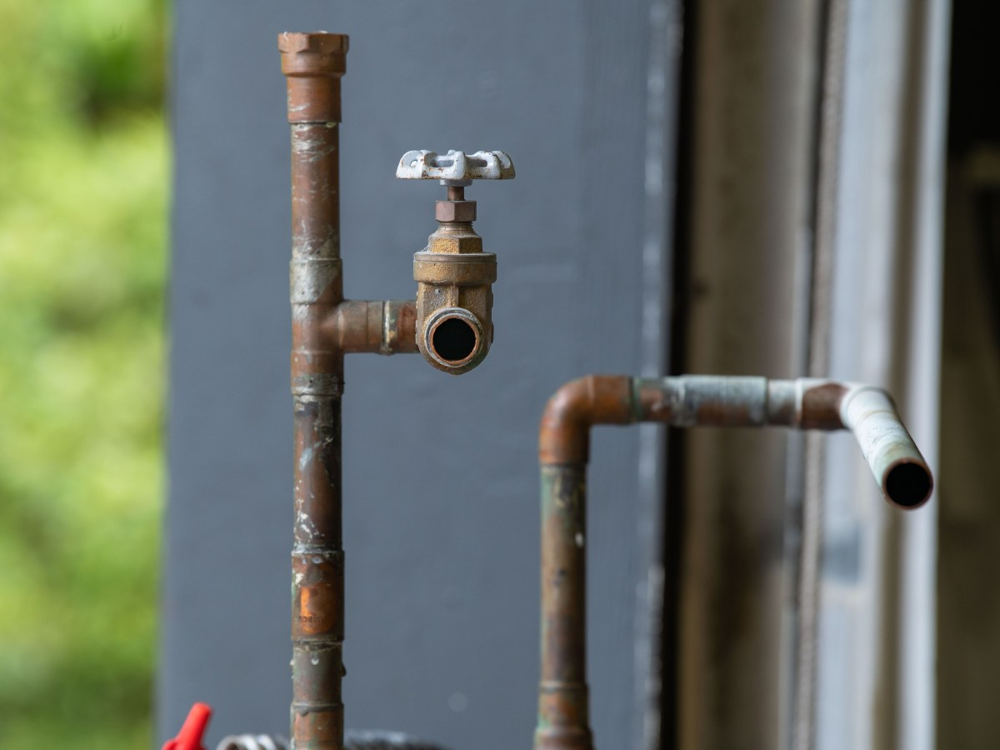
02
Gasfitería
Llaves, flexibles, sifones.
-
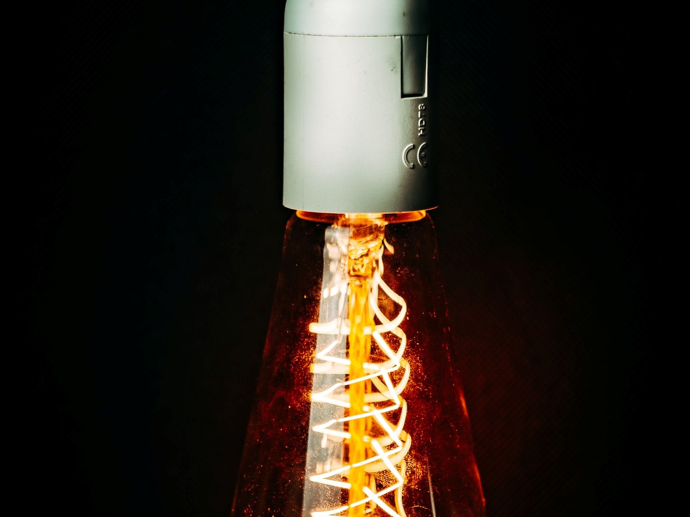
03
Eléctrico
Portalámparas, enchufes, cable.
-
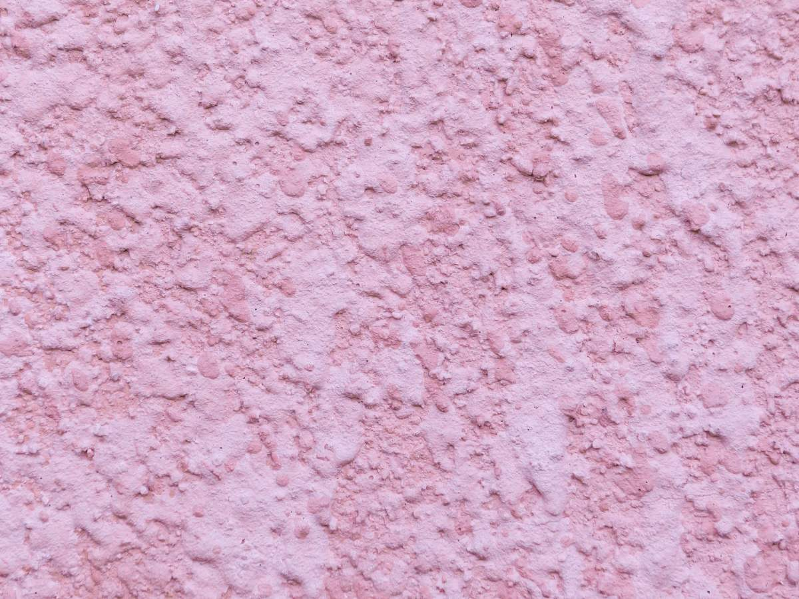
04
Pintura
Para estuco, madera y fierro.
-
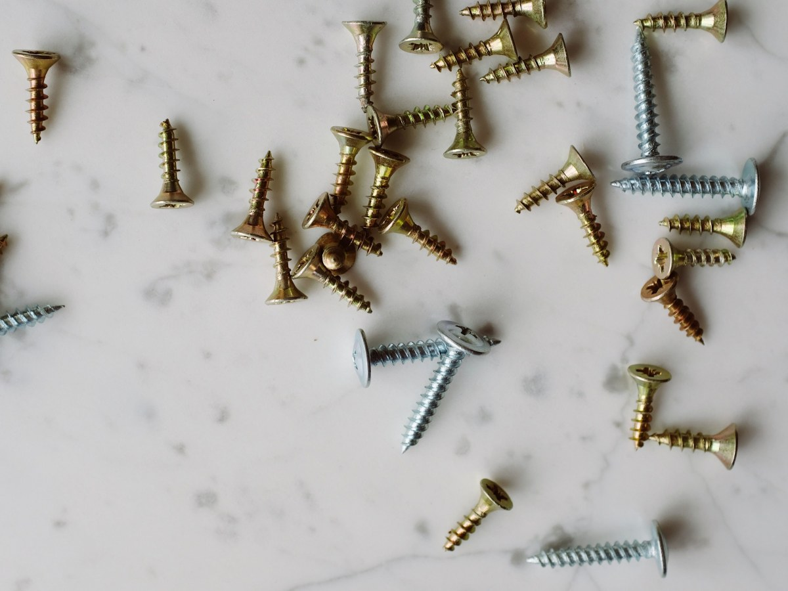
05
Fijaciones
Por unidad, del cajón.
-
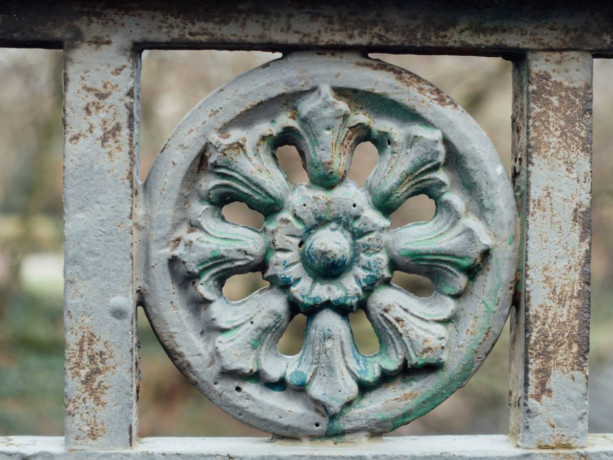
06
Patio y reja
Lo que las reseñas nombran.
Las familias son de ejemplo: las confirma la ferretería. Materiales y patio salen de sus reseñas.
Tienen dominio propio desde 2001. Hoy, quien escribe ferrolusac.cl encuentra un aviso de cuenta suspendida.
NIC Chile y el navegador, al 17-09-2026
Del rubro
Lo que se ve en una casa de barrio
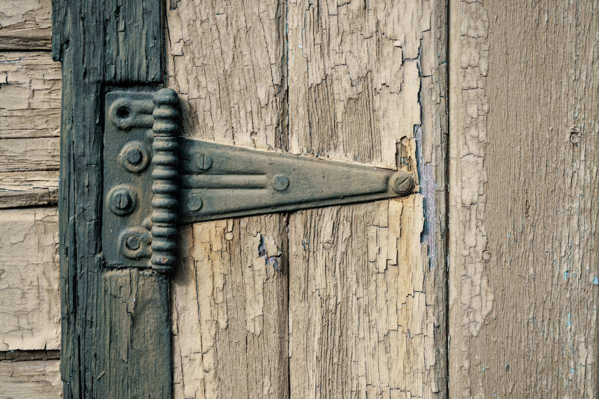
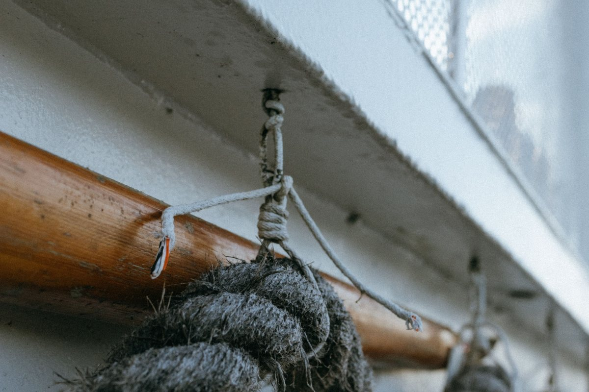
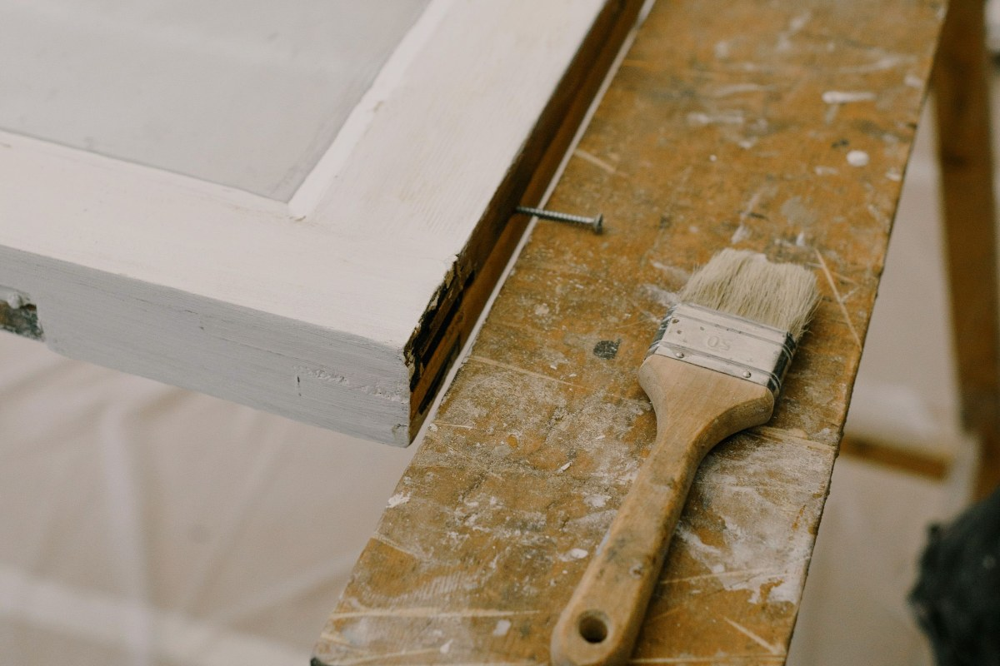
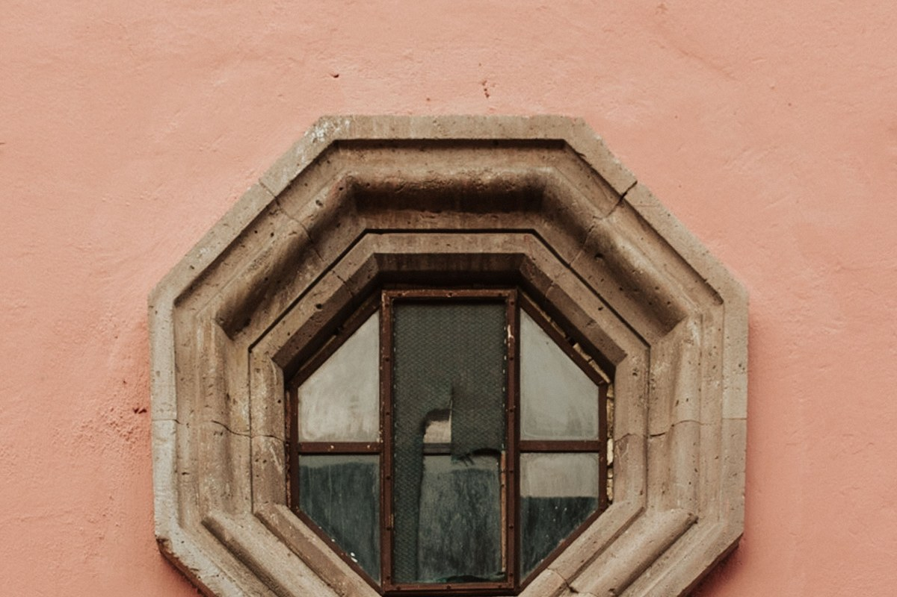
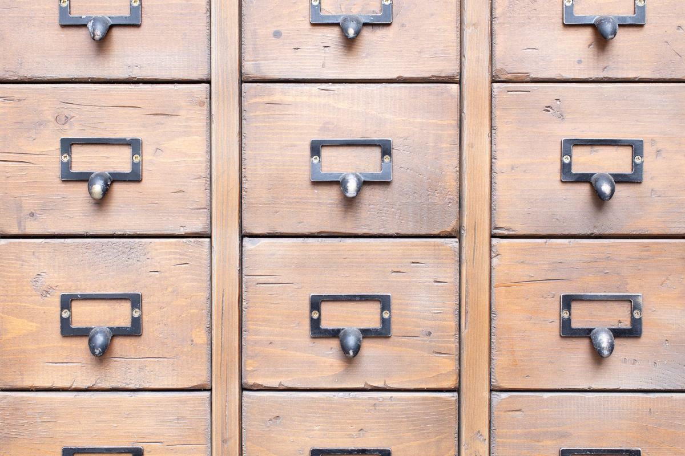
Fotos de referencia: ninguna es de la ferretería.
Dónde está
En Bustamante
- Dirección
- Av. General Bustamante 728, Ñuñoa
- Teléfono
- (2) 2223 7100
- Horario
- Lunes a viernes 8:30–18:00; sábado y domingo cerrado, según Google
- Entrega
- A domicilio, según su ficha
ferrolusac.cl, a nombre de Ferrolusac S.A. desde 2001, hoy muestra «Account Suspended».
Bustamante 728 Abrir en Google Maps
Para Ferrolusac
Qué es real y qué falta
Lo verificado
Las 161 reseñas, la dirección, el teléfono, el horario, la entrega a domicilio, la ficha sin reclamar y que ferrolusac.cl es suyo desde 2001 y hoy está suspendido.
Lo de ejemplo
Los seis cajones, las familias y todas las fotos.
Lo que falta
Reactivar el hosting de ferrolusac.cl, que ya pagan, y poner ahí una página que Google aprenda a escribir.